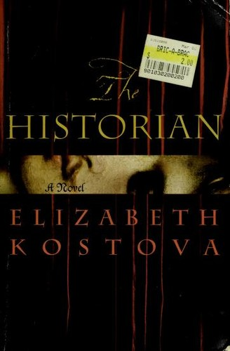
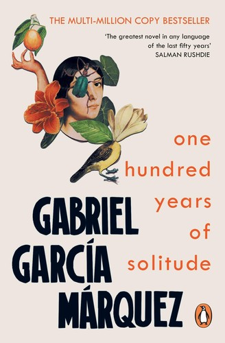
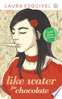
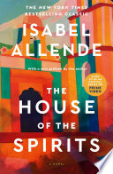
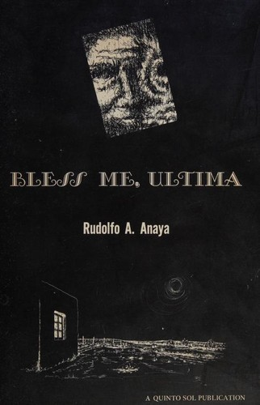
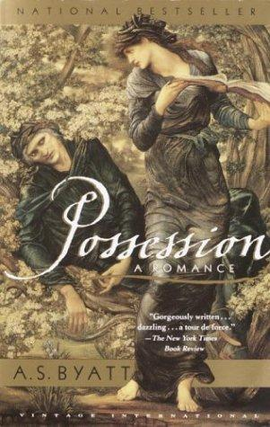
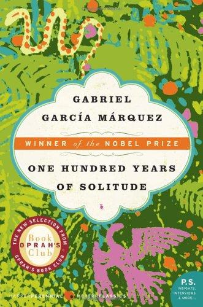
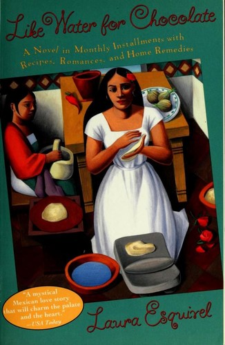
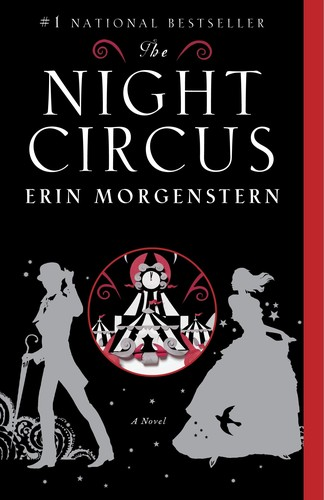

Audience Match
Analysis Overview
Mood & Tone
Language forward, poetic texture, and sensory writing are a core pleasure, not decoration.
Grief, legacy, and remembrance shape the emotional center, with a bittersweet aftertaste.
The supernatural feels symbolic and grounded, with visions and ritual creating quiet tension.
Folklore, spirituality, and practice function as meaning making systems across timelines.
Found texts, manuscripts, translation, and artifacts drive discovery and reader intrigue.
Desire and intimacy are present as pressure and atmosphere, more implied than explicit.
Place as character, from coastal stone and court confinement to Veracruz night and French ruins.
Primary Audience Demographics
- • Educators and academics (literature, history, cultural studies)
- • Writers, editors, translators, and publishing professionals
- • Librarians and archivists
- • Healthcare and mental-health professionals
- • Nonprofit/arts administrators
- • Knowledge workers in tech and design with literary tastes
- • Graduate students and lifelong learners
- • Instagram (Bookstagram; excerptable lyrical lines/poetry visuals)
- • TikTok (BookTok niches: literary fiction, historical fiction, magical realism)
- • YouTube (long-form reviews, author talks, university channels)
- • Goodreads
- • Substack (literary newsletters and criticism)
- • Indie bookstore book clubs (literary and historical-fiction picks)
- • Library/community reading groups
- • University/continuing-ed discussion groups
- • Women’s fiction/literary salons focused on theme and craft
- • Online book clubs that favor complex structure and ambiguity
- • Independent bookseller hand-sells and staff picks
- • Literary podcasts and interview shows
- • Festival panels on myth, women, and creativity
- • Awards/longlists and review outlets (trade and cultural criticism)
- • Word-of-mouth from writers/academics/translators
- • Library displays and librarian read-alikes (Byatt/Kostova/Esquivel/García Márquez)
- • Prefers indie bookstores and curated tables (literary/historical/magical realism)
- • Browses by comps and staff notes; receptive to ‘found manuscript/dual timeline’ shelf talkers
- • Library borrowing as trial, then purchase for collection/audiobook replay
- • Higher likelihood of pre-order if positioned as upmarket, discussion-worthy, and award-leaning
- Prestige literary adaptations and historical drama series
- Mystery series with atmospheric, research-driven investigation
- International/arthouse series (French/Spanish-language options)
- Character-led dramas with contemplative pacing
- Literary/arthouse dramas
- Historical dramas with political and intimate stakes
- Magical-realist or surreal cinema
- Mystery-thrillers with scholarly/archival hooks
- International cinema (Latin American and European)
- Indie/alternative and singer-songwriter
- Classical and early music (period ambience)
- Ambient/neo-classical for reading
- Latin American genres (regional, folk, contemporary crossover)
- World/experimental music
- Museum-going (painting, medieval and religious art)
- Photography and documentary art
- Poetry readings and spoken-word events
- Textile/folk arts and ritual-adjacent crafts
- Contemporary installation art
- Book clubs and long-form discussion
- Journaling and creative writing
- Genealogy/family history and local history
- Language learning and translation practice
- Travel planning (France/Mexico cultural itineraries)
- Yoga/meditation and spiritual exploration (non-dogmatic)
- Podcast listening (literature/history)
Secondary Audience Demographics
- • Students and early-career professionals
- • Writers, poets, and MFA/creative-writing community members
- • Designers and artists
- • Translators and language educators (early career)
- • Bar/restaurant and service-industry readers with strong arts engagement
- • Nonprofit and community organizers
- • TikTok (BookTok; magical realism/literary fantasy niches)
- • Instagram (poetry excerpts, aesthetic reels)
- • Reddit (genre and literature subreddits)
- • Discord reading/writing servers
- • Goodreads/StoryGraph
- • Online buddy reads
- • Speculative-literary crossover clubs
- • Queer book clubs (where applicable to reader interest)
- • Creative-writing cohort reading lists
- • Influencer read-alikes and aesthetic quote posts
- • Small-press and literary magazine coverage
- • Podcast recaps and author interviews
- • Peer recommendations from writing communities
- • Mix of indie browsing and online retailers; higher reliance on ebook deals
- • Attends author readings/signings when accessible
- • Library e-lending as a key sampling channel
- Genre-bending prestige series
- International mystery dramas
- Arthouse miniseries with poetic visuals
- Documentary series on history, myth, and culture
- Surreal/folk-horror adjacent (more atmospheric than gory)
- Indie international cinema
- Nonlinear mystery films
- Historical fantasy/drama hybrids
- Indie, dream-pop, experimental electronic
- Neo-classical/ambient
- Latin indie and folk fusion
- Zines and small-press culture
- Performance art and dance (echoing dancer character thread)
- Illustration, collage, and mixed media
- Street photography
- Writing workshops and open mics
- Language exchange meetups
- Tarot/folk spirituality (light, exploratory engagement)
- Thrift/used bookstore hunting
- Travel and cultural festivals
- Online fandom and niche reading communities
Maya Rutherford
Literary Time-Slip SleuthMuseum/archives program manager (special collections liaison) • Brooklyn, NY (frequent travel; globally minded)
Age
34–44
Education
MA (Humanities / Museum Studies)
Income
USD $85,000–$125,000
Status
Partnered, no kids
Core Needs
Connection through shared experiences, inspiration to make a positive impact in her community, and stories that validate the importance of education and mentorship.
Fears
That the book will become puzzle-box clever without emotional payoff; that magical elements will feel arbitrary rather than symbolically grounded; that depictions of trauma (bereavement, persecution, attempted sexual violence) will be sensationalized or poorly contained.
Psychological Motivations
Emily seeks stories that highlight resilience, redemption, and community impact. As an educator, she resonates with narratives of mentorship and students overcoming challenges. She reads for emotional connection, inspiration, and a reminder that small acts can create meaningful change.
Value Drivers
Relatable characters, community-driven drama, emotionally uplifting arcs, and realistic yet hopeful resolutions.
Books This Persona Loves
Top three highlighted, with more picks below.

Possession
A. S. Byatt
A literary romance-and-scholarship mystery driven by texts, desire, and interpretation—exactly her kind of intellectual suspense.

The Historian
Elizabeth Kostova
A moody, research-forward historical mystery where archives and obsession feel like plot engines, not decorations.

One Hundred Years of Solitude
Gabriel García Márquez
For its mythic family memory, lush sensory detail, and the feeling that history is alive and speaking through objects and names.
Interest Profile
Films
TV Shows
Music
Art & Creative Interests
Hobbies
Reading Behavior
Social Style
Discusses selectively: one close friend + an occasional literary salon/book-club; posts thoughtful takeaways rather than hot takes.
Reading Times
Early mornings with coffee; late evenings after screens are off; long weekend blocks for dense chapters.
Recommendation Likelihood
High to niche circles (8/10): recommends when the craft and themes align with a friend’s taste.
Reading Tracking
Uses Goodreads and a private notes app for quotes, motifs, and timeline mapping; occasionally flags passages with sticky tabs.
Reading Habits
Discovery Methods
"Give me a book that trusts me—beautiful sentences, women with interior lives, and a mystery made of memory rather than gimmicks."
—
Javier Morales
Ritual & Memory ReaderCommunity arts organizer / nonprofit program lead (cultural programming) • Los Angeles, CA (family ties to Veracruz; global outlook)
Age
27–37
Education
BA; some graduate coursework or certificates (community leadership/creative writing)
Income
USD $55,000–$85,000
Status
In a long-term relationship; considering kids
Core Needs
To feel seen in complex cultural hybridity; to reconnect with lineage and language; to find stories where masculinity includes care and spiritual responsibility; to process collective and personal grief without cynicism.
Fears
That Indigenous or ritual elements will be exoticized; that the Mexico 1970s strand will be used as atmosphere rather than lived reality; that trauma (injury, repression, addiction/drug use, attempted sexual violence) will be handled without sufficient interiority or aftercare; that ornate prose will obscure clarity.
Psychological Motivations
Javier reads for coherence and belonging: narratives that braid time, migration, and memory help him integrate multiple identities. He is drawn to liminal stories (nagual, visions, djinn) because they reflect how communities carry meaning through symbol, ritual, and art—especially under repression.
Value Drivers
Cultural respect and accuracy; community responsibility; emotional honesty; creativity as survival; moral complexity; care for family and chosen family.
Books This Persona Loves
Top three highlighted, with more picks below.

Like Water for Chocolate
Laura Esquivel
For its grounded sensuality and political edge—food, love, and tradition as forms of memory and resistance.

The House of the Spirits
Isabel Allende
For its intergenerational hauntings and the way the supernatural expresses history, trauma, and love.

Bless Me, Ultima
Rudolfo Anaya
For the lyric intensity and moral complexity of tradition, family duty, and spiritual cost.
Interest Profile
Movies
TV Shows
Music
Art & Creative Interests
Hobbies
Reading Behavior
Social Style
Social; enjoys discussing books and sharing insights with colleagues and friends.
Reading Times
Late evenings and during travel for work.
Recommendation Likelihood
Very high—sees books as tools for inspiration and social change.
Reading Tracking
Keeps a handwritten reading journal; occasionally shares reviews online.
Reading Habits
Discovery Methods
"I want magic that feels like ancestry—beautiful, scary, and specific—not decoration."
—
Market Positioning
This section shows where your book sits in the market, which categories it fits, and how readers and retailers are most likely to discover it.
Primary Category
Upmarket Literary Historical FictionSecondary Categories
Target Shelf Placement
- • Literary Fiction
- • Historical Fiction
- • Magical Realism / Myth & Folklore (where applicable)
- • Book Club Picks / Staff Recommendations
Price Positioning
Trade paperback and hardcover positioned at premium upmarket price points, justified by literary packaging cues (deckle/quality paper, typographic care for embedded poetry) and book-club/indie visibility; audiobook priced comparably to other literary epics with strong narration potential.
Seasonal Strategy
Primary push for fall (literary fiction season, awards and festival visibility) with a secondary spring campaign tied to book-club programming and festival/podcast circuits; thematic fit for late autumn/winter reading due to elegiac tone and atmospheric settings.
Brand Positioning
This section defines how your book should be presented to readers. It captures the core message, emotional appeal, and the traits that make it stand out.
Unique Value Proposition
A poetically driven, multi-era narrative that fuses archival mystery, medieval court intrigue, and Veracruz ritual magic into a lyrical meditation on grief, authorship, and cultural memory.
Target Reader Identity
Adult upmarket readers who seek literary prose, dual/multi-timeline structures, historically textured settings, and myth/folklore-inflected mysteries—often book-club and indie-bookstore shoppers open to embedded texts and ambiguity.
Emotional Appeal
Curiosity and wonder threaded through elegiac melancholy—readers are invited to feel the ache of loss, the intimacy of hidden desire, and the thrill of uncovering a buried artistic lineage.
Market Differentiation
Differentiates through its integration of original/embedded poetic forms and multilingual archival materials, plus a three-strand temporal braid (medieval + 1970s Mexico + contemporary France) that links scholarship, ritual, and political peril with sensory, synesthetic prose.
Subgenre Classification (Model Signals)
This section is a snapshot of the subgenres and story patterns your book aligns with, showing where it naturally connects in the wider landscape of discovery.
Unique Positioning
This section highlights what sets your story apart in a crowded market and shows the qualities that make it stand out to readers and retailers.
A cross-cultural, poet-scholar-ritual braid in which archives and spells function as parallel technologies for preserving (and weaponizing) memory across centuries.
Competitive Analysis & Positioning Set
Direct Competitors
Books that share the closest mix of tone, tropes, emotional arc, and audience expectation. These are the titles your readers are most likely to consider alongside yours, and the ones your marketing, pitch, and positioning will naturally compete with.

Possession
by A. S. Byatt
Similarities
- • Archival discovery and found texts as plot drivers
- • Dual narrative momentum (research/investigation + historical story)
- • Upmarket literary voice and intertextuality
- • Romantic/erotic undercurrents handled with restraint
Differences
- • Daughters of Babylon adds overt folkloric/magical elements and a ritual framework
- • More geographically and culturally multi-rooted (France/Mexico and multilingual emphasis)
- • Includes a third major timeline (1970s strand)

The Historian
by Elizabeth Kostova
Similarities
- • Document-driven investigation with research/archives
- • Cross-border settings and historical layering
- • Atmospheric tension and creeping dread
Differences
- • Daughters of Babylon is more lyric/poetry-forward and less thriller-structured
- • Supernatural elements lean toward ritual/magical realism rather than horror-gothic suspense
- • Greater focus on grief, legacy, and artistic authorship as central stakes

One Hundred Years of Solitude
by Gabriel García Márquez
Similarities
- • Mythic/magical-realist atmosphere
- • Themes of memory, lineage, and cultural history
- • Lyrical, image-rich prose
Differences
- • Daughters of Babylon is structured as interwoven timelines with investigative/archival propulsion
- • More intimate character lens and less panoramic family chronicle
- • Explicit engagement with historical Europe and contemporary literary culture

Like Water for Chocolate
by Laura Esquivel
Similarities
- • Magical realism rooted in Mexican cultural texture
- • Sensual, emotionally charged scenes and bodily/sensory emphasis
- • Myth/ritual elements shaping everyday stakes
Differences
- • Daughters of Babylon braids Mexico with medieval Aquitaine and contemporary France
- • More overt archival/poetic-literary mystery framework
- • Lower-heat romantic content and more elegiac tonal center
Indirect Competitors
Books that share adjacent themes, moods, or audiences. These aren't direct comparisons in plot or structure, but they attract readers who may also connect with your work. They help you understand nearby markets, crossover potential, and secondary positioning opportunities.

The Night Circus
by Erin Morgenstern
Similarities
- • Atmosphere-first, sensory writing
- • Romantic tension with low-to-moderate explicitness
- • Mythic, uncanny set pieces
Differences
- • Daughters of Babylon is more historically grounded and archive-driven
- • Heavier thematic focus on grief, legacy, and cultural memory
- • Less whimsical; more elegiac and politically edged
An indirect competitor for readers seeking lush, atmospheric, sensuous prose and enchanting, rule-bending magic—especially those drawn to experience-forward storytelling over tight realism.

The Shadow of the Wind
by Carlos Ruiz Zafón
Similarities
- • Book/author-centered mystery and legacy themes
- • Atmospheric, melancholic tone
- • Investigative discovery of hidden histories
Differences
- • Daughters of Babylon relies more on lyrical modern literary fiction than gothic-page-turner plotting
- • Stronger magical-realist/ritual component rather than noir-gothic intrigue
- • Multi-timeline braid including medieval and 1970s Mexico
An indirect competitor via the literary-mystery pleasure of secret texts, legacy, and the haunting pull of books and lost authors.
Market Gaps & Opportunities
This section highlights areas where reader demand is high and competition is low, giving your book a natural advantage. Use these insights to shape pitch language, refine metadata, and guide your marketing and targeting choices.
-
Position the book as "poetry-led historical mystery" rather than only "dual-timeline literary fiction."
Many comps emphasize archives and history, but fewer foreground poetry and translation as primary narrative propulsion; the project’s embedded poetic forms and manuscript texture are clear differentiators.
Impact: Stronger hook clarity for indie staff, book clubs, and literary podcast audiences; improved discoverability among readers of poet-protagonist and author-legacy narratives.
-
Lean into the Veracruz ritual strand as a distinctive magical-realist pillar within an otherwise European-centric historical-literary marketplace.
Multi-timeline historical novels often center Europe/UK; integrating a 1970s Mexico ritual narrative expands cultural scope and offers a fresher entry point for magical realism readers.
Impact: Broader cross-market reach (literary historical + magical realism + cross-cultural literary fiction) and stronger differentiation in metadata and pitching.
-
Emphasize the "house/priory as repository/portal" motif in consumer-facing copy and positioning.
Readers respond strongly to place-as-character and secret-room/archive premises; the priory/estate material provides a clean, high-concept handle for an otherwise complex braid.
Impact: Higher conversion from browsing readers and stronger jacket copy/online description performance without compromising literary framing.
Marketing Strategy
Pre-Launch
6 weeks pre-launch (awareness)
- Introduce the premise and mood: a queen in captivity, a nagual in 1972 Veracruz, and a contemporary executor unraveling a poetic legacy—linked by ritual, desire, and archives across time.
- 15–30s mood trailer video, quote cards (poetry/sensory lines), carousel “3 timelines / 1 mystery,” author/press interviews, podcast guesting, festival and panel appearances
- Optimize for video views and engaged reach; test 3–5 hooks (walled-alive legend, found manuscripts, Eleanor captivity, Veracruz nagual, ruined priory). Retarget 50%+ viewers and engagers into consideration.
Launch
2 weeks around launch (conversion)
- Build intent with proof and specificity: comps, themes (grief, memory, agency), archival artifacts, and the book-club angle; reduce “literary risk” by clarifying what kind of read it is.
- Landing page with sample chapter + discussion guide, excerpt audio, newsletter sequence, Goodreads giveaway (where available), long-form podcast interviews, Bookstagram/BookTok creator reads, blog posts on Eleanor/poetry/ritual research
- Optimize for landing page views, email sign-ups, and clicks to retailer/indie links; retarget site visitors and engaged video viewers with excerpt and review snippets.
Post-Launch
6 weeks post-launch (sustain momentum)
- Capture high-intent readers with clear CTAs to buy/borrow; focus on retailer optimization, book-club bundles, and event-driven spikes.
- Retargeting ads (purchase objective), retailer deal callouts (where available), signed-copy/indie incentives, virtual launch + readings, library ordering assets, paid newsletter placements (BookBub/Genre newsletters where fit)
- Optimize to purchases/clicks with tight creative rotation, strong CTA, and region-specific links. Use social proof (early reviews, blurbs, award/longlist mentions if obtained).
Campaign Structure
Key Themes to Emphasize
Social Media Posts
A mentor dies. A house of journals and poems is left behind. And an executor begins to suspect the past is not finished speaking. #DaughtersOfBabylon #LiteraryFiction #HistoricalFiction
Eleanor of Aquitaine in captivity—stone walls, court politics, and the stubborn need to preserve a voice. A story where poetry becomes survival.
Veracruz, 1972: a nagual walks the line between family and ritual, carrying visions that won’t let him look away. Magical realism with teeth—and tenderness.
Found manuscripts. A ruined priory. A legend of a woman walled alive. If you love archival mysteries braided with history and myth, this one’s for you.
This book begs to be heard: lyrical prose, interwoven timelines, and poems that echo across centuries. Audio readers—put it on your list.
Target Channels
Digital
Social Media Posts
- Instagram (Reels, Stories, quote cards, carousel timelines)
- Facebook (events, reader communities, targeted ads)
- TikTok (literary TikTok + poetry/mood content; selective)
- YouTube (short trailers + author reading clips)
- Goodreads (author Q&A, giveaways where available, list placement outreach)
Primary KPIs
- Meta Ads (Facebook/Instagram)
- Amazon Ads (Sponsored Products + Lockscreen for ebook where applicable)
- BookBub Ads (if available/eligible)
- Goodreads Ads (selective test for historical/literary segments)
- Newsletter sponsorships (literary fiction, historical fiction, poetry/culture newsletters)
Audience-Specific Messaging
- Landing page hub: synopsis, timeline map, sample chapter, discussion guide, content warnings, retailer links
- Email welcome series (3–5 emails): premise → excerpt → themes → book-club guide → buy/borrow
- Serial excerpting: poetry lines + archival ‘artifact’ images (manuscript/typed pages aesthetic)
- Podcast guesting + clip repurposing (30–60s reels from interviews)
- SEO blog posts: Eleanor of Aquitaine in fiction, what a nagual is (respectfully), archives/translation as story engines
Traditional
Print Media
- Literary review outreach (print and online)
- Library journals and regional arts publications
- Independent bookstore staff rec sheets and shelf-talkers
- Festival programs and conference listings
Events
- Virtual launch reading + Q&A (recorded for reuse)
- Book-club Zoom visits (paid or bundled with multi-copy orders)
- Library talks on archives, memory, and historical imagination
- Festival panels: women in history, myth and ritual in fiction, writing across timelines
Partnerships
- Independent bookstores (signed stock, reading groups, staff picks)
- Libraries (local author talks, reading group kits)
- University departments (history, literature, translation studies)
- Poetry organizations and journals (excerpt publication, readings)
- Cultural institutes (Francophone/LatAm cultural centers) for themed events
Messaging Framework
Primary Tagline
A queen in captivity. A poet’s legacy in ruins. A spell of memory stretching across centuries.
Supporting Messages
An upmarket dual-timeline novel blending medieval court intrigue, 1972 Veracruz ritual life, and contemporary archival discovery in southern France.
A grief-driven literary mystery: when a mentor dies, her executor finds poems, journals, and a trail that refuses to stay in the past.
Lyrical, sensual, and slightly uncanny—where translation, ritual, and desire shape what survives.
For readers who love found manuscripts, layered histories, and mythic realism that deepens (rather than replaces) emotional truth.
Sample Copy
Back Cover Blurb
When Silvina is named executor of her mentor Vivian Lansdowne’s estate, she expects paperwork, not prophecy. In a house crowded with journals, poems, and brittle artifacts, Silvina begins to sense a story that doesn’t belong to one lifetime—or one language. Centuries earlier, Eleanor of Aquitaine watches the sea from captivity, her world narrowed to stone, politics, and a fierce resolve to preserve what cannot be governed: desire, verse, and the names that history tries to erase. In 1972 Veracruz, Lupo Sánchez—a nagual bound to ritual duty—moves through visions that feel less like dreams than messages meant to be carried. As Silvina follows Vivian’s trail to a ruined priory in southern France, the past gathers like weather: manuscripts surface, legends sharpen, and the boundary between scholarship and the uncanny thins. Daughters of Babylon is a lyrical, interwoven novel of grief and inheritance—where poems become evidence, rituals become maps, and what was buried insists on being read.
Email Subject Lines
- • A queen in captivity, a poet’s legacy, and a mystery across time
- • If you love found manuscripts and dual timelines…
- • Poems as evidence: a new lyrical historical mystery
- • A ruined priory, a hidden archive, and what refuses to stay buried
- • Reading guide inside: questions for your book club
Video Creative Scripts
Script
VO (calm, intimate): “A woman inherits a poet’s papers… and finds a story that doesn’t belong to one century.” On-screen text: THREE TIMELINES. ONE LEGACY. Cut: Rain on a stone window. A crown-shaped shadow. A hand smoothing a manuscript page. VO: “Eleanor of Aquitaine—confined. A nagual in Veracruz—called by ritual. A modern executor—pulled into an archive that feels alive.” On-screen text: POETRY. RITUAL. MYSTERY. VO: “What was hidden to survive… insists on being read.” End card: Daughters of Babylon + author name + “Read a sample / Order now”.
Sora Prompt
Create a 25-second cinematic book trailer with lyrical, atmospheric visuals. Scenes: (1) medieval stone turret window with rain streaks overlooking a grey sea; (2) close-up of an illuminated manuscript and a modern typed page taped to a wall; (3) moonlit cave in Veracruz with stalactites and a gourd on the ground; (4) ruined French priory at dusk with wind moving tall grass. Color palette: deep indigo, parchment gold, sea-grey. Camera: slow push-ins, shallow depth of field. No readable text on pages. Add subtle drifting dust motes and candlelight flicker. Tone: contemplative, uncanny, elegant.
Script
On-screen text: FOUND POEMS. FOUND TRUTHS. VO: “She thought she was settling an estate.” Cut: Keys on a desk; a folder labeled “Vivian”; a map of southern France. VO: “Instead she opened a door—into a queen’s captivity, a ritualist’s visions, and a legacy written in more than one language.” On-screen text: DUAL TIMELINES • LITERARY MYSTERY • MAGICAL REALISM End card: “Download the discussion guide.”
Sora Prompt
Create a 20-second modern literary mystery trailer. Visuals: desk with old keys, archival folders, scattered photographs, a French map with hand-drawn circles, candlelit close-ups of handwritten notes, and a brief flash of a medieval corridor. Lighting: warm practical lamps with soft shadows. Style: upscale, minimal, museum-like. Motion: slow pans and match cuts between past and present. No gore, no explicit content.